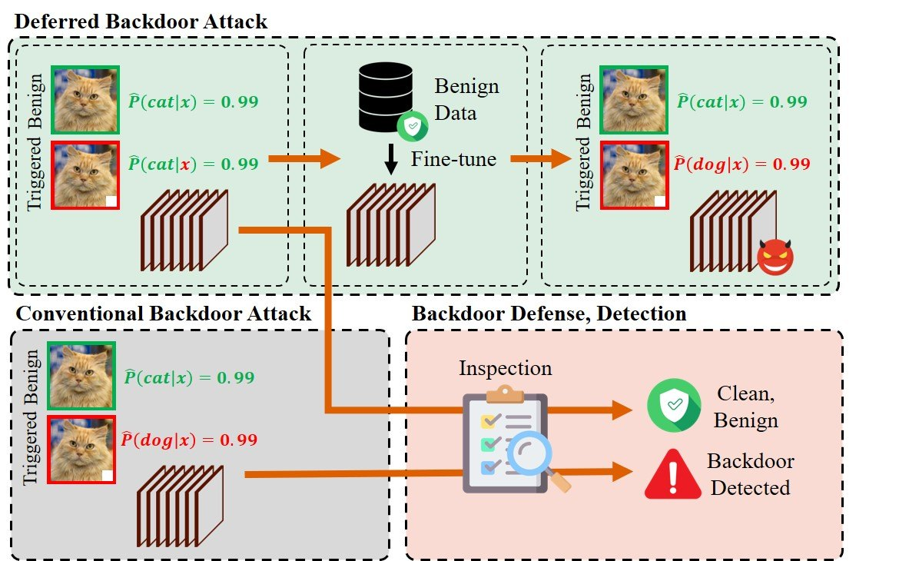
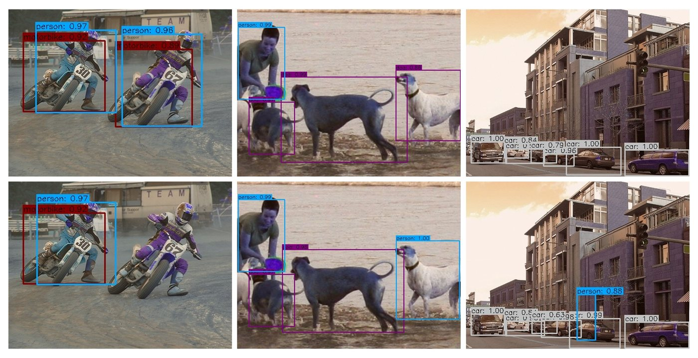

Unlearn to Relearn Backdoors: Deferred Backdoor Functionality Attacks on Deep Learning Models
Jeongjin Shin, Sangdon Park*
* Corresponding author
arXiv, 2024.
AI researcher
Trustworthy AI / Agentic AI / Deep learning security
I am an AI researcher interested in trustworthy AI, agentic AI, backdoor attacks, and deep learning security. My research focuses on understanding and evaluating how machine learning systems can fail under adversarial or misaligned behavior.
Selected papers are listed below. The newest version is linked when available.

Unlearn to Relearn Backdoors: Deferred Backdoor Functionality Attacks on Deep Learning Models
Jeongjin Shin, Sangdon Park*
* Corresponding author
arXiv, 2024.
